Trattato del ribelle/Guerrino
Jünger’s The Forest Passage reread through Guerrino and the Bagnaia commune, with a catalogue of his statues.
International Graphic Design Biennale, Milan 2026


The project
An editorial project for the Visual Communication II course: the brief asked us to reinterpret a treatise of radical philosophy in a contemporary way. We chose Ernst Jünger’s The Forest Passage (Der Waldgang), a 1951 text that theorises a silent, individual resistance to power.
To give this figure a concrete face we looked for a real parallel in the communes of the 1970s, in particular the Bagnaia commune in the countryside near Siena, and in the figure of Guerrino: not a leader in a hierarchical sense, but a man who embodies Jünger’s rebel precisely. Guerrino died in 2017, leaving a series of statues scattered across the commune’s land.
Since we could not interview him, we rebuilt his figure through the stories of Lucia and Checco, long-standing members of the community, and through the commune’s photo archive. Alongside the book, a catalogue of his statues, which we photographed ourselves.
The project was exhibited at the International Graphic Design Biennale in Milan, 2026.
Timeline
In the book the timeline runs along the top of the pages: 176 photographs from the commune’s archive, cropped and ordered as they appear in the book. Drag to scroll it, click a photo to enlarge it.
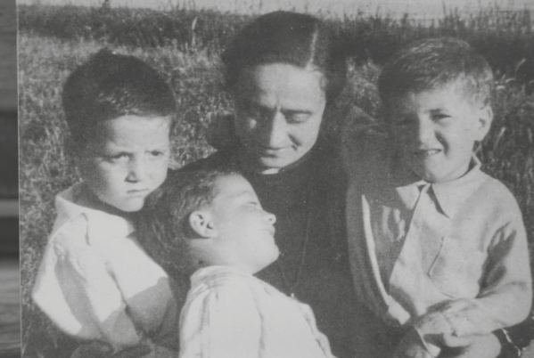

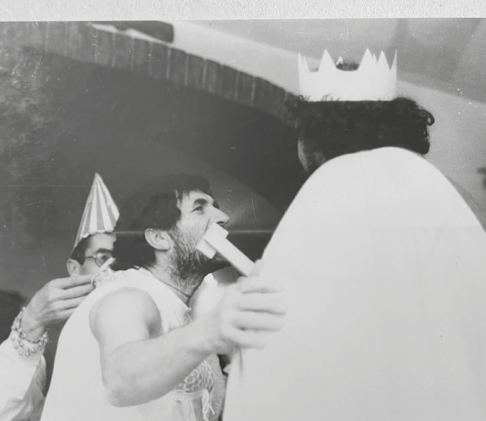

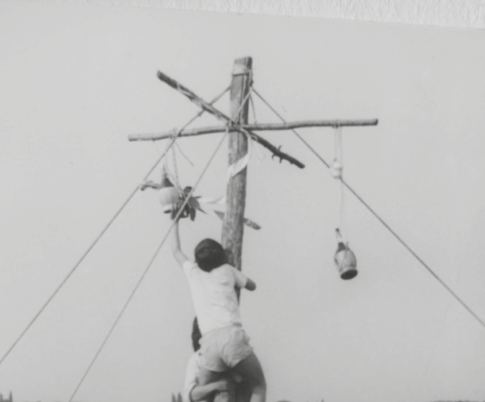
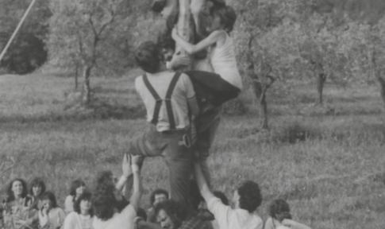
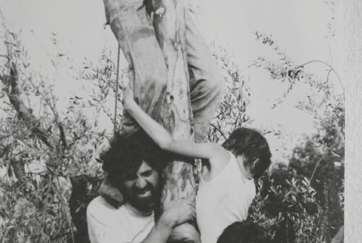
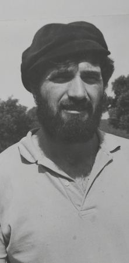
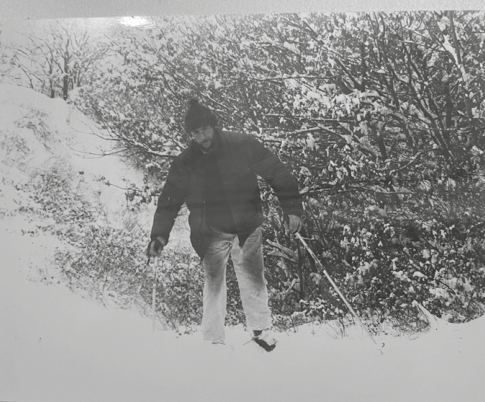
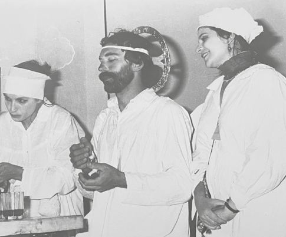


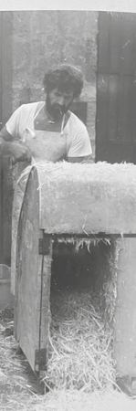


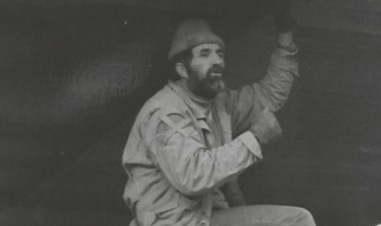


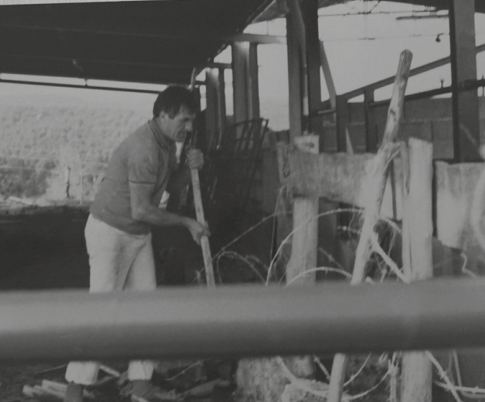


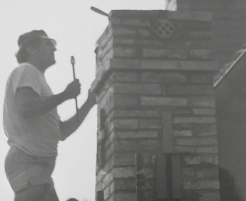
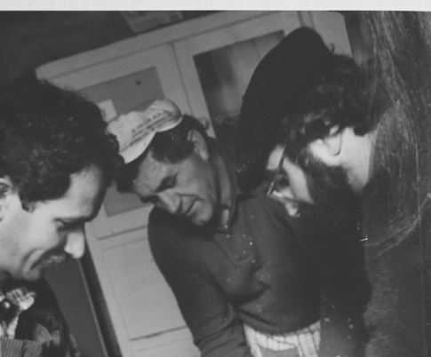


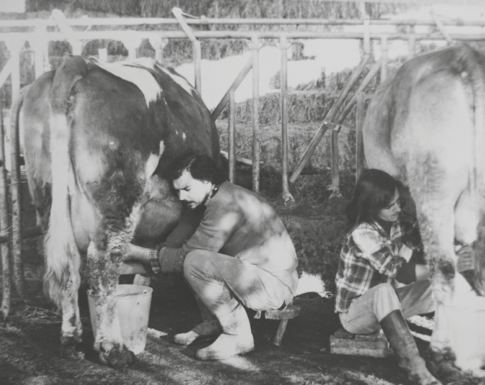


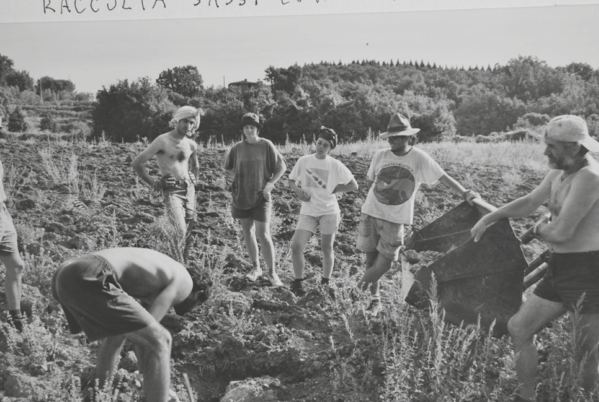


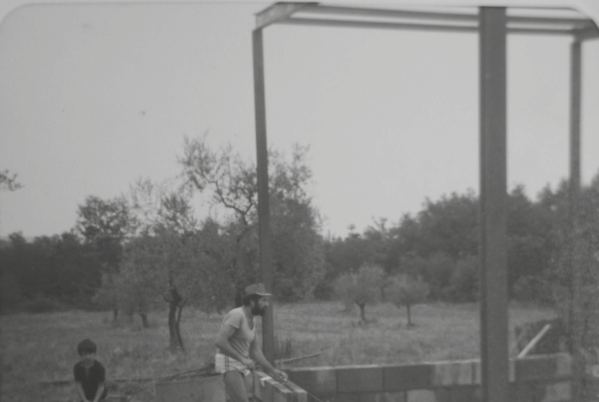


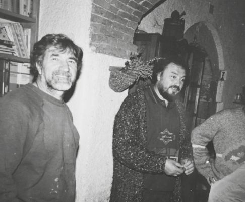


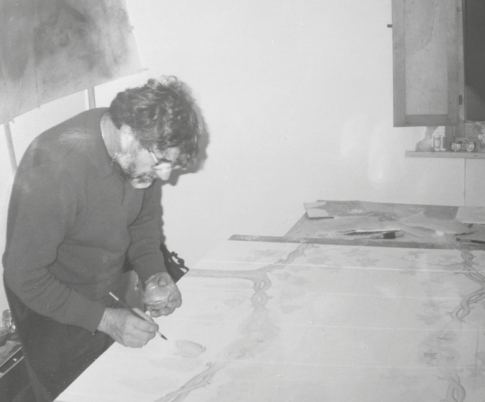
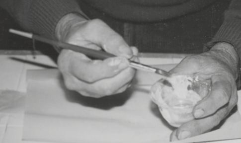


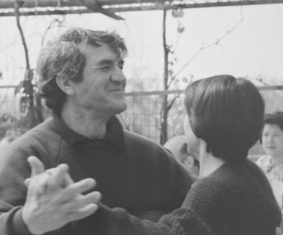


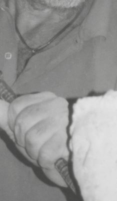

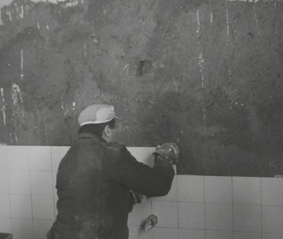


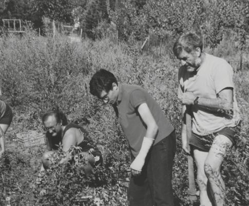

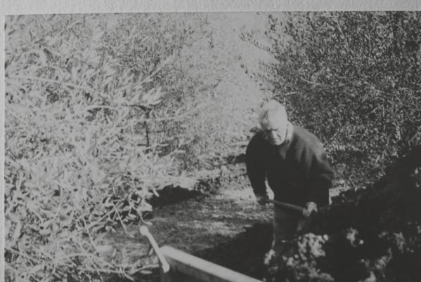

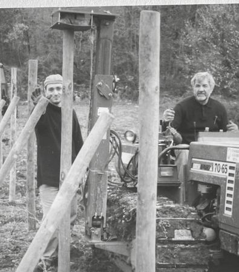


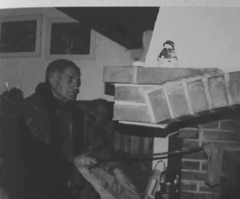

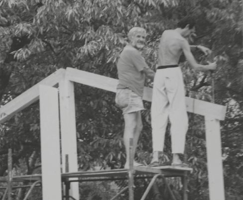


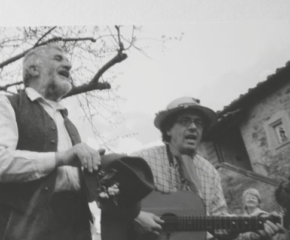


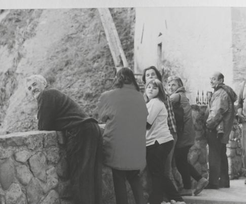


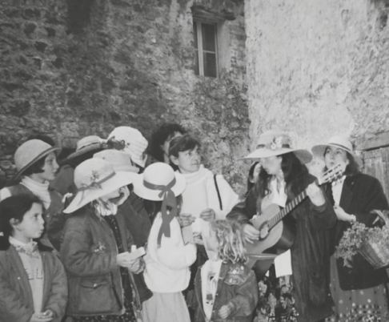


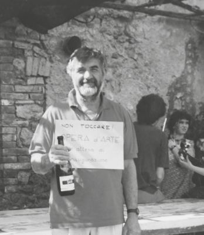
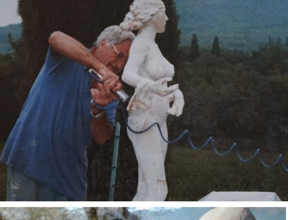
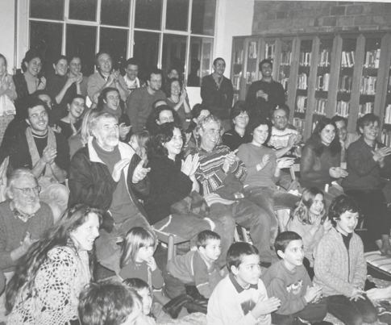


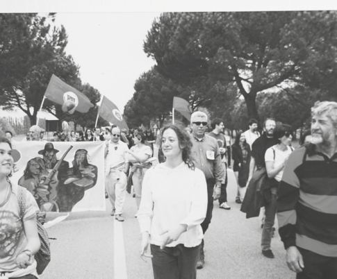


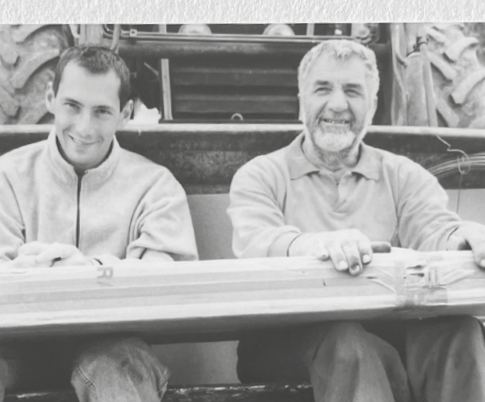

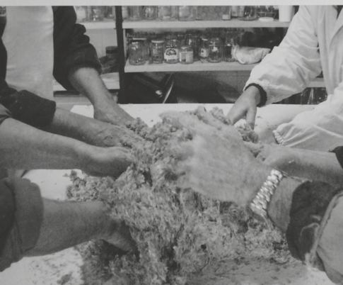

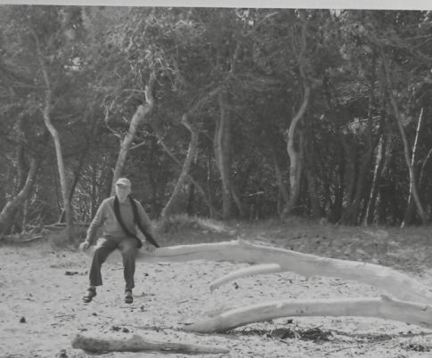

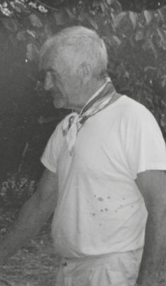
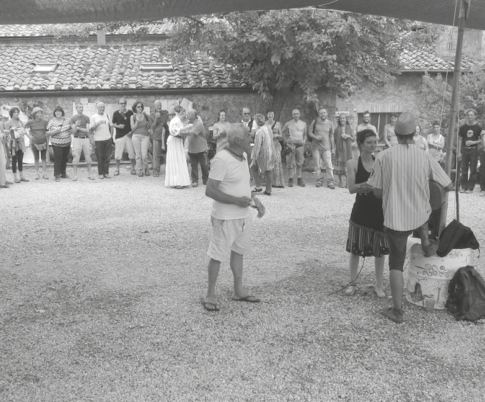
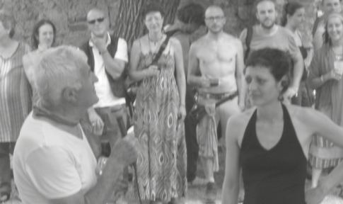


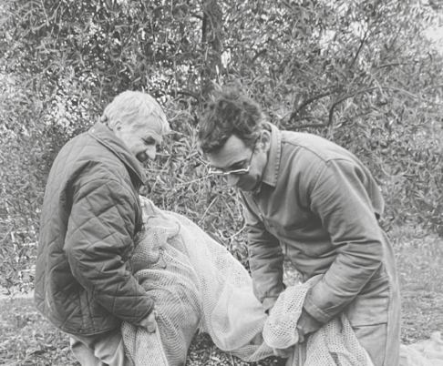

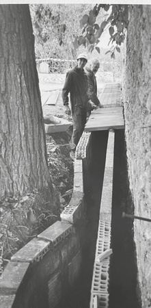


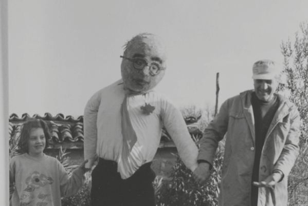

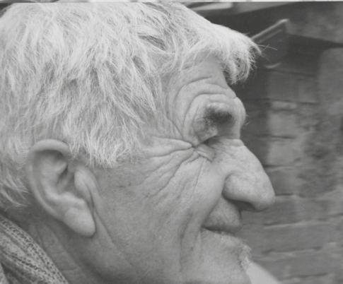


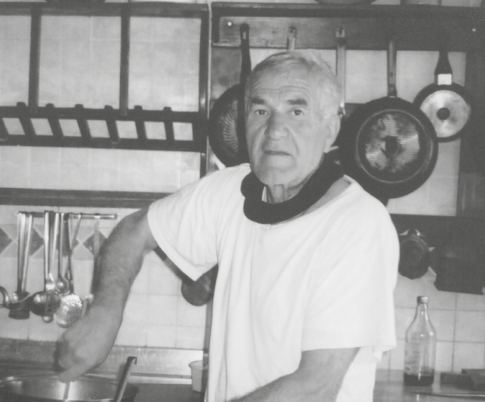
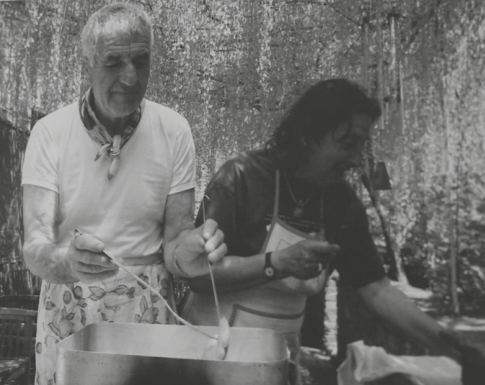
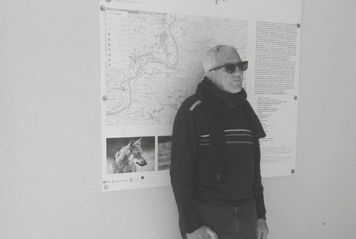
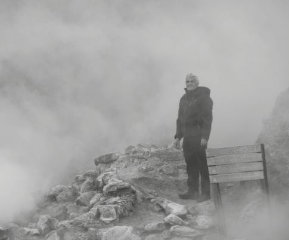


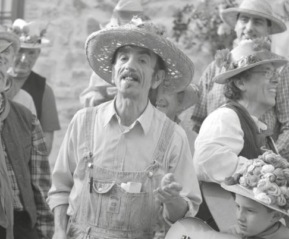
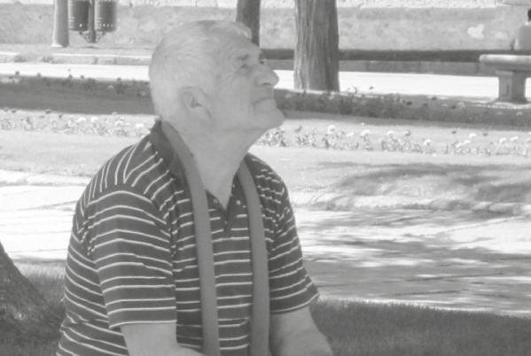


The book and the catalogue
Photographs of the finished volumes.


Project made with Alessandro dell’Aquila and Livia Sorrentino.